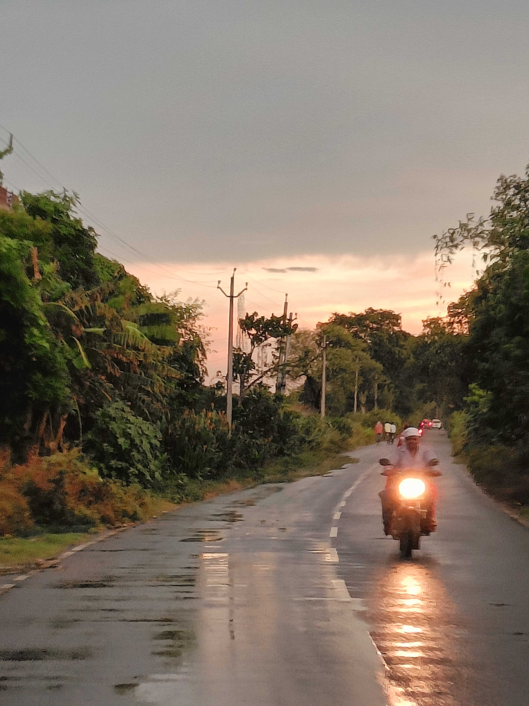
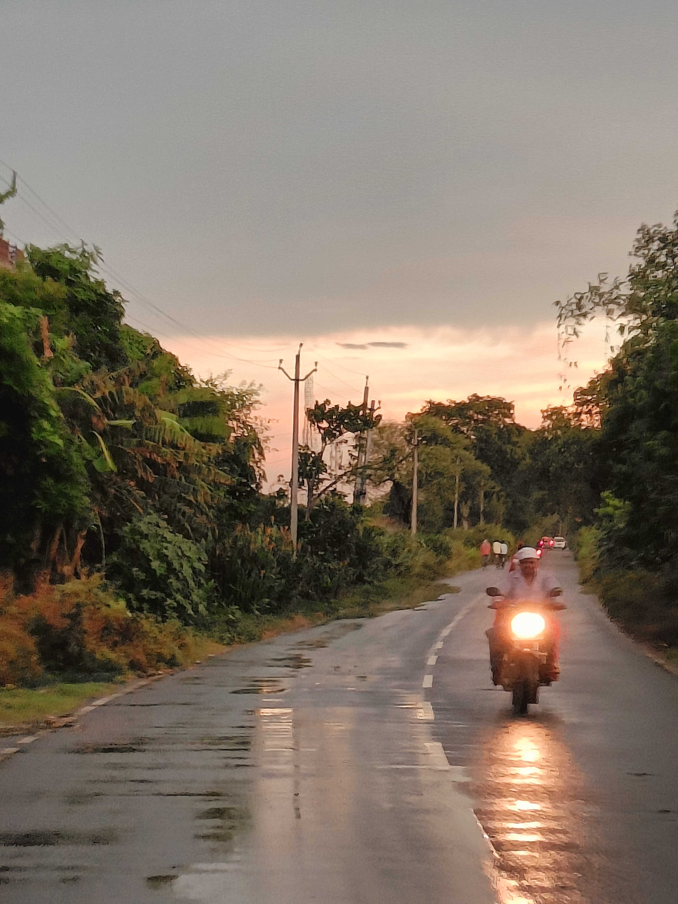

I'm Vinit.
a Web Developer.


I am an aspiring full stack web developer and a fast learning student. The world of web to me is a pool of opportunities.

I started writing short plays in High School and it has been 5 years since I've been working in different literary projects. I've written over 103 short free verses and 2 short novels.

Studying web development sure is an experience worth the time. I have been studying web development for 4 months now and have completed 3 minor projects.

I have studied photography for 3 months and it has been an interesting experience. I do nature photography as it helps me connect to the beauties of it.
 

If you're into nature photography or have a love for writing or coding lets talk about it.
Contact Me© 2022 vinit kumar pandey.